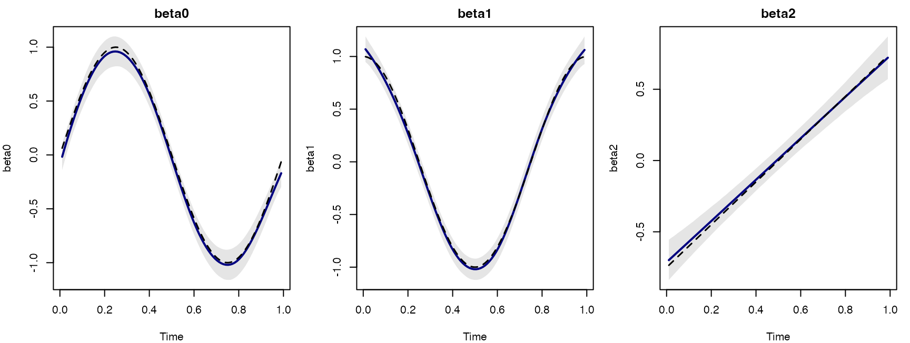
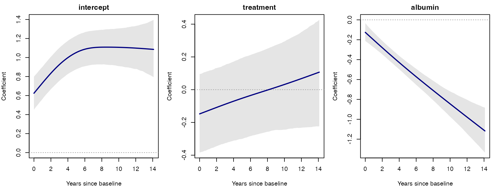

TDMM fits Bayesian time-dynamic mixed-effects models with coefficient functions that vary over time and subject-specific random intercepts. Gaussian, Bernoulli, and Poisson responses are supported. Subjects may have different observation times and visit counts. Numeric covariates can be constant within subject or change at each visit. The default is eight cubic B-spline basis functions (degree 3, order 4) with a second-order coefficient-difference penalty. Install JAGS before fitting.
This page is the HTML companion to the package’s Sweave Getting Started vignette.
Data and fitting
Provide one row per observed subject and visit, with columns for subject ID, numeric time, response, and covariates. The order of x.var determines the coefficient labels: beta1 multiplies the first covariate, beta2 the second, and so on.
library(TDMM)
fit <- tdmm(long_data, family = "gaussian",
subject.var = "id", time.var = "time", y.var = "y",
x.var = c("baseline", "changing"), n_basis = 8,
control = tdmm_control(chains = 3, iterations = 4000,
burn_in = 1500, thin = 2,
adapt = 2000, seed = 77181),
priors = tdmm.priors("gaussian"))
summary(fit)
plot(fit)
plot.trace.tdmm(fit, c("sigma.b", "sigma2.e", "tau.alpha[1]"))Here baseline should be repeated within subject and changing may vary by visit. TDMM handles the subject indexing and spline construction. The Gaussian coefficient curves are on the response scale; Bernoulli coefficients are on the log-odds scale and Poisson coefficients on the log-mean scale. Inspect trace plots, R-hat, effective sample size, and credible bands before interpretation.
Coefficient-function recovery
The figure illustrates recovery from simulated data with known coefficient functions. Solid lines show posterior means, dashed lines the truth, and shaded regions pointwise 95% credible bands. The Gaussian example gives the fitting code. The Bernoulli and Poisson examples show the same workflow for binary and count outcomes.

PBC2 real-data application
The PBC2 application uses the pbc2 dataset from JMbayes2: 1,945 observations from 312 subjects, with 1–16 visits. The response is log serum bilirubin; predictors are a baseline treatment indicator and longitudinal albumin. Albumin is centered at its overall observation-level mean, 3.3898868894601542 g/dL. Thus the intercept represents the modeled placebo trajectory at that albumin level and random intercept zero.
The treatment 95% credible interval includes zero throughout the common evaluation grid. The albumin coefficient is negative, with its band below zero on that grid. These are conditional associations, and the treatment curve does not establish a causal effect. Late follow-up is sparse, so small tail fluctuations should not be read as precise clinical changes.

Using your own data
Choose family = "gaussian", "bernoulli", or "poisson" and supply the intended covariates in x.var order. The data checks reject missing analysis values; decide how to handle missingness before fitting. Varying n_basis is a useful sensitivity check; scientifically important smoothing or variance priors can also be examined using tdmm.priors(). For independent chains on macOS or Linux, select parallel execution through tdmm_control(parallel = TRUE, cores = 2, ...).